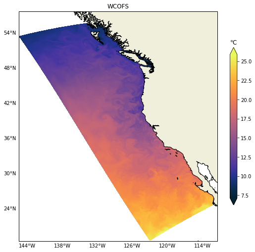
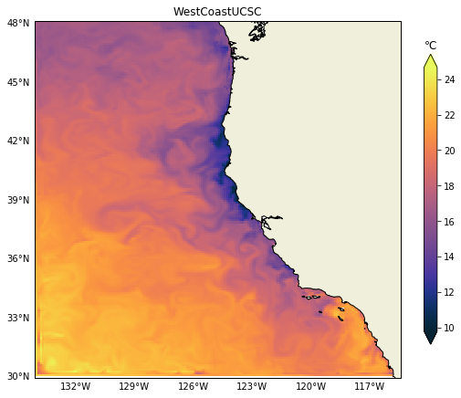
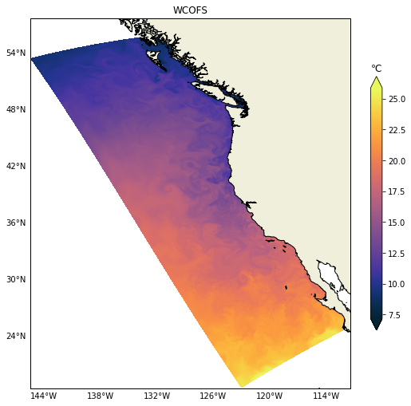
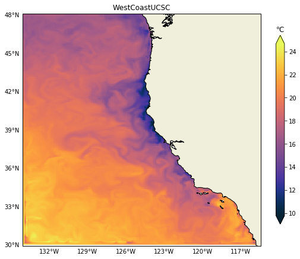

IOOS models: Temperature Horizontal Slices¶
This is the second post on the series “IOOS Ocean Models IOOS.”
Thanks to standardized metadata and grid specs one read the data and compare different models results. In this post we will demostrante how to leverage Python’s libraries to plot horizontal temperature slices from a variety of ocean models with minimum specific code.
Be sure to check the first post on the series.
models = {
"DOPPIO": {
"RA": "MARACOOS",
"url": "http://tds.marine.rutgers.edu/thredds/dodsC/roms/doppio/2017_da/avg/Averages_Best",
"var": {"standard_name": "sea_water_potential_temperature"},
},
"NYHOPS": {
"RA": "MARACOOS",
"url": "http://colossus.dl.stevens-tech.edu:8080/thredds/dodsC/latest/Complete_gcmplt.nc",
"var": {"standard_name": "sea_water_temperature"},
},
"NECOFS-GOM3": {
"RA": "NERACOOS",
"url": "http://www.smast.umassd.edu:8080/thredds/dodsC/FVCOM/NECOFS/Forecasts/NECOFS_GOM3_FORECAST.nc",
"var": {"standard_name": "sea_water_potential_temperature"},
},
"NECOFS-MASSBAY": {
"RA": "NERACOOS",
"url": "http://www.smast.umassd.edu:8080/thredds/dodsC/FVCOM/NECOFS/Forecasts/NECOFS_FVCOM_OCEAN_MASSBAY_FORECAST.nc",
"var": {"standard_name": "sea_water_potential_temperature"},
},
"CNAPS": {
"RA": "SECOORA",
"url": "http://thredds.secoora.org/thredds/dodsC/SECOORA_NCSU_CNAPS.nc",
"var": {"standard_name": "sea_water_potential_temperature"},
},
"CMOP-SELFE": {
"RA": "NANOOS",
"url": "http://amb6400b.stccmop.org:8080/thredds/dodsC/model_data/forecast",
"var": {"standard_name": "average_sea_water_temperature"},
},
"OSU-ROMS": {
"RA": "NANOOS",
"url": "http://ona.coas.oregonstate.edu:8080/thredds/dodsC/NANOOS/OCOS",
"var": {"standard_name": "sea_water_potential_temperature"},
},
"Hawaii-ROMS": {
"RA": "PacIOOS",
"url": "http://oos.soest.hawaii.edu/thredds/dodsC/hioos/roms_forec/hiig/ROMS_Hawaii_Regional_Ocean_Model_best.ncd",
"var": {"standard_name": "sea_water_potential_temperature"},
},
"WCOFS": {
"url": "http://opendap.co-ops.nos.noaa.gov/thredds/dodsC/WCOFS/fmrc/Aggregated_7_day_WCOFS_Fields_Forecast_best.ncd",
"var": {"standard_name": "sea_water_temperature"},
},
"WestCoastUCSC": {
"url": "http://oceanmodeling.pmc.ucsc.edu:8080/thredds/dodsC/ccsra_2016a_phys_agg_zlevs/fmrc/CCSRA_2016a_Phys_ROMS_z-level_(depth)_Aggregation_best.ncd",
"var": {"long_name": "potential temperature"},
},
}
We need loop over the models dictionary and load the grid and the variable of interest.
from gridgeo import GridGeo
from gridgeo.cfvariable import CFVariable
from netCDF4 import Dataset
for name in list(models):
model = models[name]
try:
nc = Dataset(model["url"])
var = CFVariable(nc, **model["var"])
grid = GridGeo(nc, **model["var"])
models[name].update({"nc": nc})
models[name].update({"variable": var})
models[name].update({"grid": grid})
except (RuntimeError, ValueError, OSError) as e:
print(f"Could not get data from {name}\n{e}")
models.pop(name)
---------------------------------------------------------------------------
ModuleNotFoundError Traceback (most recent call last)
<ipython-input-2-c661c61f046c> in <module>
----> 1 from gridgeo import GridGeo
2 from gridgeo.cfvariable import CFVariable
3 from netCDF4 import Dataset
4
5 for name in list(models):
ModuleNotFoundError: No module named 'gridgeo'
The main challenge is to figure out what layer is the surface in all
those models using only the metadata available with little “manual inspection.”
The function get_surface_idx below uses the variable mesh information to figure that
out automatically for us.
def get_surface_idx(var, mesh):
# Short-circuit if data does not have a z-axis.
if ("ugrid" not in mesh.lower() and var.ndim == 3) or (
"ugrid" in mesh.lower() and var.ndim == 2
):
return None
z = var.z_axis()
if np.argmin(z.shape) == 0 and z.ndim == 2:
points = z[:, 0]
elif np.argmin(z.shape) == 1 and z.ndim == 2:
points = z[0, :]
else:
points = z[:]
positive = getattr(z, "positive", None)
if positive == "up":
idx = np.unique(points.argmax(axis=0))[0]
elif positive == "down":
idx = np.unique(points.argmin(axis=0))[0]
else:
raise ValueError(f'Cannot find property "positive" in {z}')
return idx
Now that we know what is the surface layer we can get the data and its bounding box for the figure.
def get_layer(var, mesh, layer, time_step=-1):
if layer is None:
return var[time_step, :]
if var.ndim == 4 or "ugrid" in mesh.lower():
return var[time_step, layer, ...]
elif var.ndim == 3 and "ugrid" not in mesh.lower():
return var[layer, ...]
else:
msg = "Cannot find the surface for var {!r}".format
raise ValueError(msg(var))
def get_bbox(var, delta=0.1):
x = var.x_axis()[:]
y = var.y_axis()[:]
return [np.min(x) - delta, np.max(x) + delta, np.min(y) - delta, np.max(y) + delta]
Last but not least we have plot_surface_cfvar that checks if we have a UGRID,
1-D or 2-D kind of mesh for the plotting.
We do have one special case, NYHOPS,
where the coordinates associated with the variable are not
the coordinates we need for plotting, so we need to add an exception code for that model.
%matplotlib inline
import cartopy.crs as ccrs
import matplotlib.pyplot as plt
import numpy as np
from cartopy.feature import COLORS, NaturalEarthFeature
from cartopy.mpl.gridliner import LATITUDE_FORMATTER, LONGITUDE_FORMATTER
from palettable.cmocean.sequential import Thermal_20
cmap = Thermal_20.mpl_colormap
LAND = NaturalEarthFeature(
"physical", "land", "10m", edgecolor="black", facecolor=COLORS["land"]
)
def plot_surface_cfvar(var, grid, name, vlevel=None, time_step=-1):
fig, ax = plt.subplots(
figsize=(9, 9), subplot_kw={"projection": ccrs.PlateCarree()},
)
if name == "NYHOPS":
# This model is non-standard and the CF-model won't work here
# b/c the coordinates associated with the temperature variable have NaNs
# and we need to pull this x, y coordinates that are not listed in the variable.
nc = model["nc"]
x, y = nc["x"][:], nc["y"][:]
else:
x = var.x_axis()[:]
y = var.y_axis()[:]
if name == "WestCoastUCSC":
# The surface has many NaNs for some reason, so we plot the second level.
vlevel -= 1
z = get_layer(var, grid.mesh, layer=vlevel, time_step=time_step)
# Using masked data only to get `vmin` and `vmax`
# b/c tripcolor cannot take masked data :-(
# This workaround is need to plot the Columbia River data.
masked = np.ma.masked_greater_equal(z, 9.96921e36)
vmin, vmax = np.nanmin(masked), np.nanmax(masked)
kw = {
"cmap": cmap,
"zorder": 0,
"vmin": vmin,
"vmax": vmax,
}
bbox = get_bbox(var)
ax.set_extent(bbox)
gl = ax.gridlines(draw_labels=True)
gl.xlabels_top = gl.ylabels_right = False
gl.ylines = gl.xlines = False
gl.xformatter = LONGITUDE_FORMATTER
gl.yformatter = LATITUDE_FORMATTER
ax.add_feature(LAND, zorder=1, edgecolor="black")
if grid.mesh == "ugrid":
faces = grid.triang.triangles
cs = ax.tripcolor(x, y, z, triangles=faces, **kw,)
else:
cs = ax.pcolormesh(x, y, z, **kw)
units = getattr(var, "units", "None")
if units in ["degree_Celsius", "degrees_C", "Celsius"]:
units = "℃"
cbar = fig.colorbar(cs, extend="both", shrink=0.65)
cbar.ax.set_title(units)
ax.set_title(f"{name}")
return fig, ax
Finally we can loop over the models plot them all:
for name in models.keys():
model = models[name]
grid = model["grid"]
var = model["variable"]
vlevel = get_surface_idx(var, grid.mesh)
fig, ax = plot_surface_cfvar(var, grid, name, vlevel=vlevel, time_step=-1)


 



It is relatively easy to change to any other variable like salinity for example. In the next post we will demonstrate how to plot vertical sections, those can be challenging due to the heterogeneity of vertical coordinates in the models.